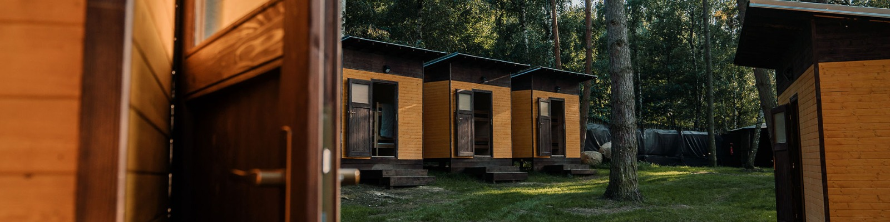
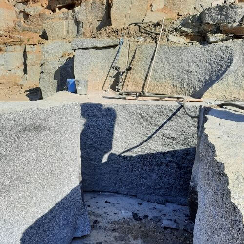

Lom Kozárovice

Něco o lomu
V lomu Kozárovice těžíme kozárovickou žulu, dodáváme stavební kvádry, kostkovou dlažbu, tříděnou stavební drť a zakázkové žulové monolity. Jsme zaměřeni na výrobu žulových prvků hrubé kamenické výroby. Produkujeme tedy převážně všechny typy žulové kostky pro dláždění komunikací, krajníky, haklíky, regulační a záhozový kámen.
Jsme připraveni vyjít zákazníkům vstříc i s výrobou určitých atypických prvků či rozměrů. Kámen je zpracováván na kvalitních technologiích české společnosti GESTRA CZ. Pro větší odběratele jsme v případě potřeby schopni zajistit až 600 tun vyrobených kostek měsíčně. Ročně v našem lomu vytěžíme zhruba 15 až 18 tisíc tun materiálu.
Něco o žule
Kozárovická žula (granodiorit) se těží v okolí obce Kozárovice, která spadá do lomařské oblasti středočeského (sázavského) plutonu. Kozárovická žula je známá více jak 100 let, v roce 1900 byla použita při stavbě vídeňského parlamentu a následně na dalších mnoha stavbách v celé Evropě. U nás ji můžeme vidět na nádvoří hradu Zvíkov, v pražském metru na trase “A” a “C” jako obklady nebo dlažbu, na schodišti Národního muzea a na mnoha dalších místech.